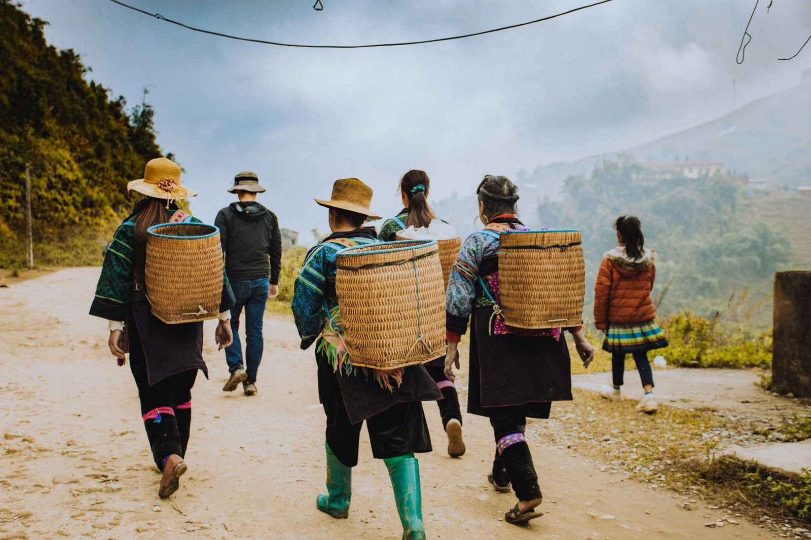
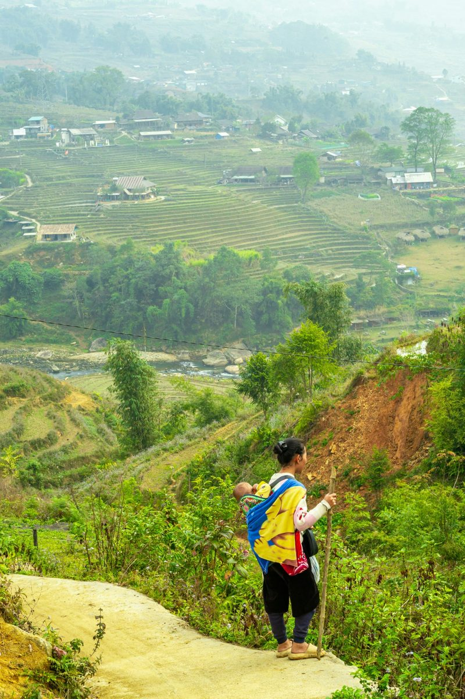
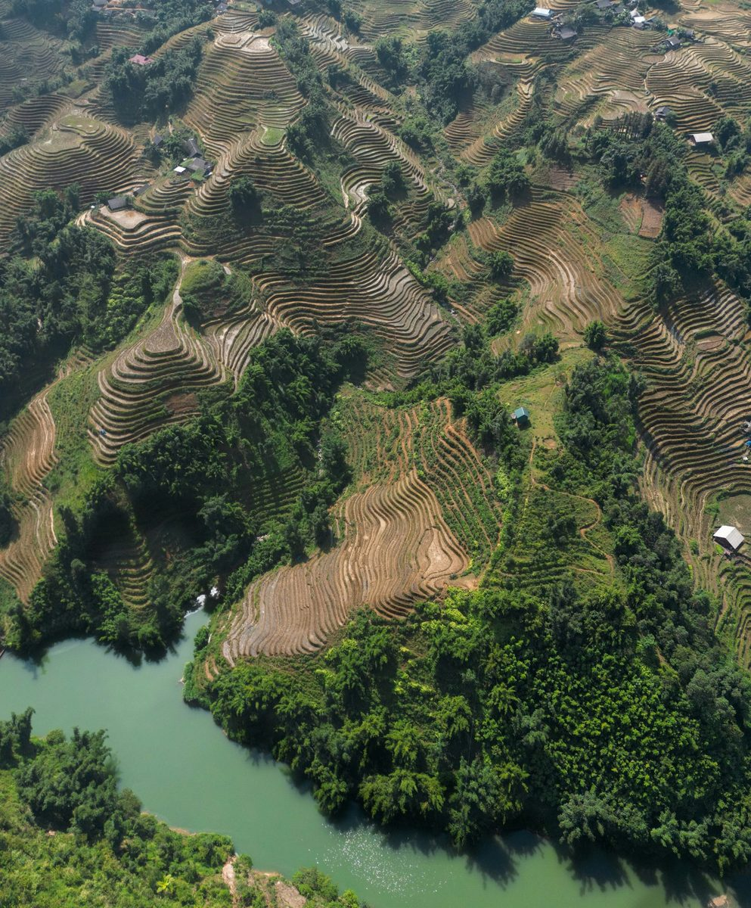
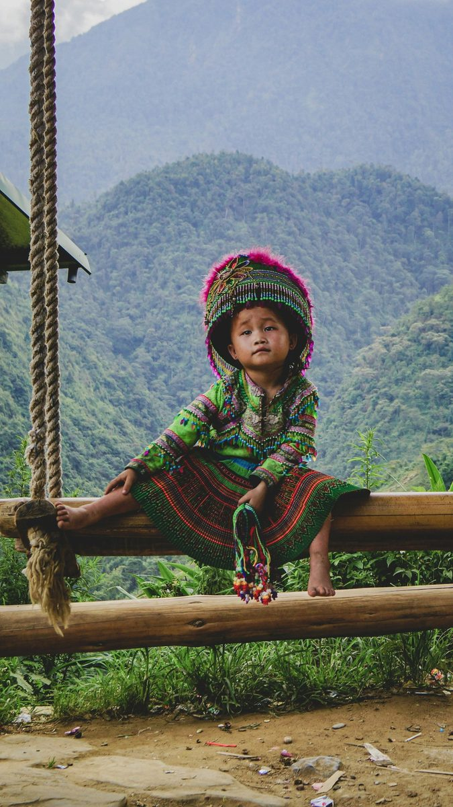
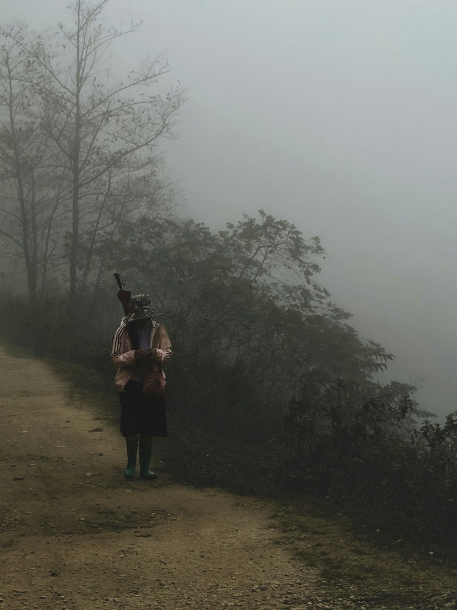

Highland life
Meet the people and traditions of Vietnam’s northern mountains.
Breathtaking landscapes. Rich culture. Unforgettable people. Real journeys, beyond the ordinary.
Explore Destinations ↗From misty mountains to ancient towns, vibrant cities to peaceful countryside — discover the many faces of Vietnam.
Choose a destination to explore its own collection of photographs and places.
Cruise between emerald waters and limestone islands.
Mountain air, terraced fields and highland culture.
Quiet rivers, ancient temples and dramatic karst landscapes.
A living mix of old streets, lakeside calm and unforgettable food.
Lantern-lit evenings, heritage lanes and riverside charm.
Open beaches, mountain viewpoints and modern coastal energy.
Meaningful encounters, everyday life and unforgettable moments that make Vietnam so special.

Meet the people and traditions of Vietnam’s northern mountains.

Quiet moments in the landscapes that sustain local communities.

The colour, character and continuity of highland culture.

Discover skills and stories passed down through generations.

Walk at a slower pace and experience the mountains up close.
Big views and memorable moments in Vietnam’s highlands.
Tell us what inspires you, who you’re travelling with and how you want to experience Vietnam. We’ll help shape a journey that feels personal from the very first day.
Plan Your Trip ↗Thoughtfully curated journeys for international travellers who want to experience Vietnam beyond the checklist — with space for local character, memorable food and the moments that stay with you.